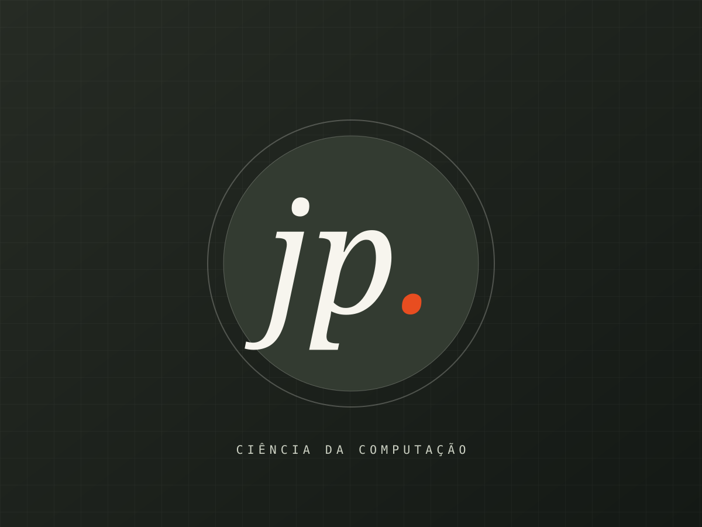

Ciência da Computação
João Pedro
Fonseca.
Gosto de entender o que acontece por trás da tela. Tenho experiência em montagem de computadores e redes, desenvolvo projetos com SQL e direciono minha formação para desenvolvimento backend e infraestrutura.

Projetos em destaque.
Hardware, banco de dados e redes na prática.

Minha trajetória
Sobre mim.
Tenho 22 anos, sou do Distrito Federal, técnico em Informática pelo Senac e graduando em Ciência da Computação no UDF. Tenho experiência em montagem e configuração de computadores e conhecimentos práticos em redes, diagnóstico e suporte técnico.
Durante minha graduação, desenvolvi interesse por modelagem de dados e SQL, aplicando conceitos de bancos relacionais em projetos acadêmicos. Também venho desenvolvendo habilidades em HTML, CSS, JavaScript e programação. Meu objetivo é aprofundar meus conhecimentos em backend com Java, banco de dados, segurança e infraestrutura em nuvem, construindo soluções funcionais, organizadas e eficientes.
Formação
- AtualCiência da ComputaçãoCentro Universitário do Distrito Federal (UDF)
- 2024Técnico em InformáticaSenac Jessé Freire · 1.200 horas
- 2022Operador de ComputadorSenac Jessé Freire · 196 horas